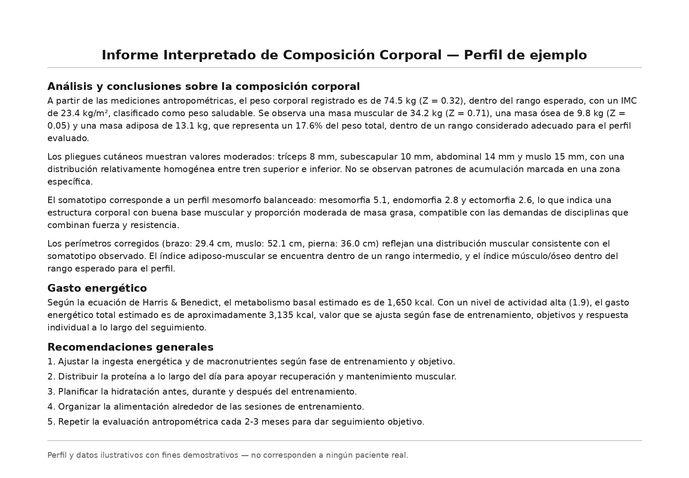

El rendimiento deportivo no depende solo del entrenamiento: la alimentación y la composición corporal juegan un papel central en cómo respondes, te recuperas y progresas. Dentro de esta área se incluye la posibilidad de realizar una evaluación antropométrica ISAK, con mediciones estandarizadas para conocer tu composición corporal y sus principales indicadores.
¿Cómo puede ayudar la nutrición deportiva?
Ajustar la alimentación a tu objetivo deportivo, tipo de entrenamiento y momento de la temporada permite apoyar el rendimiento, la recuperación y la composición corporal de forma más precisa que una recomendación genérica de "come más proteína" o "baja de peso".
Qué considera el abordaje
- Objetivo deportivo y nivel de actividad física
- Tipo, frecuencia e intensidad del entrenamiento
- Evaluación de la composición corporal
- Seguimiento de cambios en la composición corporal
- Necesidades de energía y nutrientes según el objetivo
- Hidratación
- Alimentación alrededor del entrenamiento
- Recuperación y rendimiento
- Educación nutricional adaptada al deporte y al contexto individual
Cómo se estructura el plan
El plan parte de tu antropometría inicial y de tu rutina de entrenamiento real, y se ajusta en conjunto contigo según cómo respondas — no es una tabla fija de macros que se aplica igual a cualquier deportista.
Informe antropométrico ISAK
La evaluación puede incluir la elaboración de un informe antropométrico, con los resultados obtenidos durante la medición y su interpretación dentro de tu contexto individual. Así se ve, a modo de ejemplo, la forma en que se presentan esos resultados:

La antropometría ISAK es una herramienta de apoyo: te permite conocer y dar seguimiento objetivo a tu composición corporal a lo largo del tiempo. No sustituye una evaluación nutricional clínica integral, y los resultados se interpretan siempre dentro de tu contexto individual — no como un número aislado, ni como la promesa de un porcentaje de grasa específico o un resultado garantizado.
Ver qué mide cada indicador (Perfil Restringido)
| Medida | ¿Qué nos indica? |
|---|---|
| Medidas básicas | |
| Masa corporalPeso total | Base para calcular IMC y composición corporal. |
| EstaturaTalla estándar | Necesaria para calcular proporciones y comparar con normas de referencia. |
| Altura del asientoPerfil restringido | Proporción tronco vs. extremidades. Relevante en deportistas. |
| Pliegues de piel | |
| Tríceps | Grasa en extremidades superiores. |
| Subescapular | Grasa central-superior. Relacionado con riesgo cardiovascular. |
| Supraespinal / Abdominal | Grasa abdominal y riesgo metabólico. Indicador de grasa visceral. |
| Muslo y pantorrilla | Distribución de grasa en extremidades inferiores. |
| Bíceps / Cresta ilíacaPerfil restringido | Mayor precisión en el perfil de grasa y somatotipo. |
| Circunferencias | |
| Brazo relajado y contraído | Masa muscular del brazo. Monitorea cambios con el entrenamiento. |
| Cintura | Indicador clave de riesgo cardiovascular y metabólico. |
| Caderas | Con la cintura, calcula el índice cintura-cadera. |
| Muslo y pantorrilla | Masa muscular en piernas. Importante en deportistas. |
| AmplitudesPerfil restringido | |
| Húmero y fémur | Tamaño del esqueleto, usado para calcular el somatotipo. |
| Bi-estiloideo | Estructura ósea de la extremidad superior. |
Seguimiento e individualización
El seguimiento permite ver cómo tu composición corporal responde al plan y al entrenamiento a lo largo del tiempo, y ajustar antes de que una estrategia deje de ser efectiva para tu momento actual.
Lo particular de este abordaje
A diferencia de un plan nutricional genérico para "bajar de peso" o "ganar músculo", aquí el punto de partida es tu antropometría real y las demandas específicas de tu deporte — no una fórmula estándar de calorías y macros.
Si practicas deporte de forma competitiva o recreativa y quieres entender mejor tu composición corporal y cómo tu alimentación puede apoyar tu rendimiento, empecemos con una evaluación.
Reservar evaluación por WhatsApp